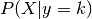
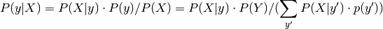
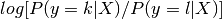

1.13. Linear and quadratic discriminant analysis¶
Linear discriminant analysis (lda.LDA) and quadratic discriminant analysis (qda.QDA) are two classic classifiers, with, as their names suggest, a linear and a quadratic decision surface, respectively.
These classifiers are attractive because they have closed-form solutions that can be easily computed, are inherently multiclass, and have proven to work well in practice. Also there are no parameters to tune for these algorithms.
The plot shows decision boundaries for LDA and QDA. The bottom row demonstrates that LDA can only learn linear boundaries, while QDA can learn quadratic boundaries and is therefore more flexible.
Examples:
Linear and Quadratic Discriminant Analysis with confidence ellipsoid: Comparison of LDA and QDA on synthetic data.
References:
| [3] | “The Elements of Statistical Learning”, Hastie T., Tibshirani R., Friedman J., 2008. |
1.13.1. Dimensionality reduction using LDA¶
lda.LDA can be used to perform supervised dimensionality reduction by projecting the input data to a subspace consisting of the most discriminant directions. This is implemented in lda.LDA.transform. The desired dimensionality can be set using the n_components constructor parameter. This parameter has no influence on lda.LDA.fit or lda.LDA.predict.
1.13.2. Mathematical Idea¶
Both methods work by modeling the class conditional distribution of the data  for each class k. Predictions can be obtained by using Bayes’ rule:

In linear and quadratic discriminant analysis, P(X|y) is modelled as a Gaussian distribution. In the case of LDA, the Gaussians for each class are assumed to share the same covariance matrix. This leads to a linear decision surface, as can be seen by comparing the the log-probability rations .
In the case of QDA, there are no assumptions on the covariance matrices of the Gaussians, leading to a quadratic decision surface.